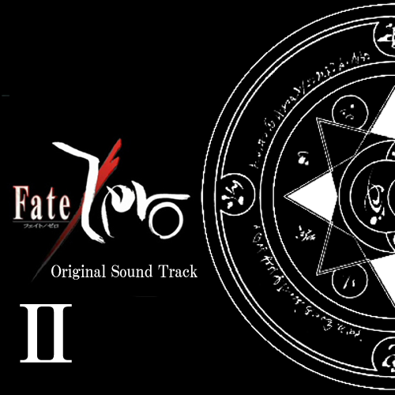
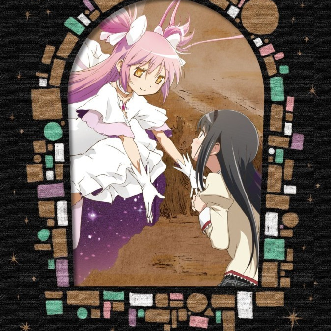
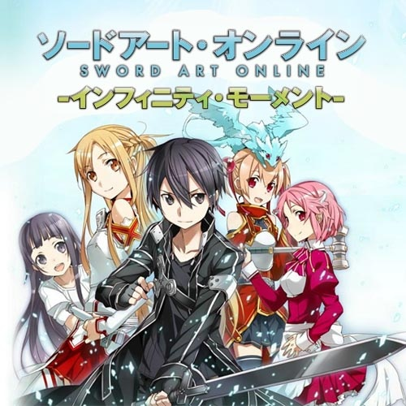

<div class="home">
  {% for post in site.posts %}
      {% if post.categories contains 'album' %}
        <h2>{{page.title}}</h2>
        
        {{content}}
      {% endif %}
  {% endfor %}
  <div id="fatezero" class="album">
    <h2>Fate/Zero Original Soundtrack Volume 2</h2>
    
    <ol>
      <li>fate to zero (3:02)</li>
      <li>for him (0:39)</li>
      <li>army of the king (2:13)</li>
      <li>curse (2:24)</li>
      <li>dogfight (3:13)</li>
      <li>the sword of promised victory ~Fate/Zero ver. (2:05)</li>
      <li>Babylonia (1:55)</li>
      <li>on the battlefield (2:21)</li>
      <li>betrayer (1:42)</li>
      <li>you are my king (2:37)</li>
      <li>at peace (1:33)</li>
      <li>little star (2:41)</li>
      <li>in a nightmare (1:53)</li>
      <li>a man in black (2:44)</li>
      <li>painful #2 (1:34)</li>
      <li>dogfight #2 (1:35)</li>
      <li>the battle to come (2:50)</li>
      <li>on an island (2:21)</li>
      <li>burning village (1:52)</li>
      <li>I will (1:32)</li>
      <li>in a forign town (1:22)</li>
      <li>she’s just in time (0:46)</li>
      <li>days gone by (4:20)</li>
      <li>mission (2:46)</li>
      <li>mission #2 (2:57)</li>
      <li>the dream fades before dawn (1:28)</li>
      <li>the dream fades before dawn #2 (0:47)</li>
      <li>tender moment (1:17)</li>
      <li>this day, and never again (3:32)</li>
      <li>the dream fades before dawn #3 (3:34)</li>
      <li>the world is tumbling down (2:47)</li>
      <li>silver moon (2:15)</li>
    </ol>
  </div>
  <div id="madoka" class="album">
    <h2>Puella Magi Madoka Magica Original Soundtrack Volume 1</h2>
    
    <ol>
      <li>Sis puella magica! (2m48s)</li>
      <li>Salve, terrae magicae (1m29s)</li>
      <li>Gradus prohibitus (3m35s)</li>
      <li>Credens justitiam (1m56s)</li>
      <li>Clementia (1m58s)</li>
      <li>Desiderium (1m41s)</li>
      <li>Conturbatio (1m28s)</li>
      <li>Postmeridie (1m39s)</li>
      <li>Puella in somnio (1m56s)</li>
      <li>Umbra nigra (1m43s)</li>
      <li>Terror adhaerens (3m49s)</li>
      <li>Scaena felix (1m50s)</li>
      <li>Pugna cum maga (2m14s)</li>
    </ol>
  </div>
  <div class="clearfix"></div>
  <div id="sao" class="album">
    <h2>Sword Art Online Original Soundtrack Volume 1</h2>
    
    <ol>
      <li>swordland (3:17)</li>
      <li>feel uneasy (1:40)</li>
      <li>everyday life (1:54)</li>
      <li>quiet strain (1:57)</li>
      <li>no way (1:44)</li>
      <li>stand at bay (1:10)</li>
      <li>weird place (2:09)</li>
      <li>survive the swordland (2:16)</li>
      <li>taut nerves (1:57)</li>
      <li>a tense situation (2:31)</li>
      <li>a strategy meeting (1:46)</li>
      <li>in your past (1:37)</li>
      <li>march down (1:52)</li>
      <li>left in suspense (2:12)</li>
      <li>we have to defeat it (1:49)</li>
      <li>at our parting (1:24)</li>
      <li>confront battle (2:41)</li>
      <li>at our parting ~piano only (1:25)</li>
      <li>luminous sword (2:29)</li>
      <li>at our parting ~Vc only (0:47)</li>
      <li>a close battle (1:54)</li>
      <li>a tender feeling (2:06)</li>
      <li>a narrow escape (1:52)</li>
      <li>he rules us  (2:36)</li>
      <li>fight! (2:07)</li>
      <li>a tiny love (1:45)</li>
      <li>smile for me  (1:39)</li>
      <li>gracefully (1:50)</li>
      <li>a squabble (1:21)</li>
      <li>with my friend (1:25)</li>
      <li>the first town (1:54)</li>
      <li>at nightfall (1:57)</li>
      <li>despaired (1:21)</li>
    </ol>
  </div>
  <div id="fiction" class="album">
    <h2>Fiction</h2>
    
    <ol>
      <li>key of the twilight</li>
      <li>cynical world</li>
      <li>fake wings</li>
      <li>fiction</li>
      <li>vanity</li>
      <li>red rose</li>
      <li>canta per me</li>
      <li>zodiacal sign</li>
      <li>awaking</li>
      <li>open your heart</li>
      <li>winter</li>
      <li>salva nos</li>
      <li>lullaby</li>
      <li>echo (instrumental)</li>
    </ol>
  </div>
  <div class="clearfix"></div>
  <p class="rss-subscribe">subscribe <a href="{{ "/feed.xml" | prepend: site.baseurl }}">via RSS</a></p>

</div>
